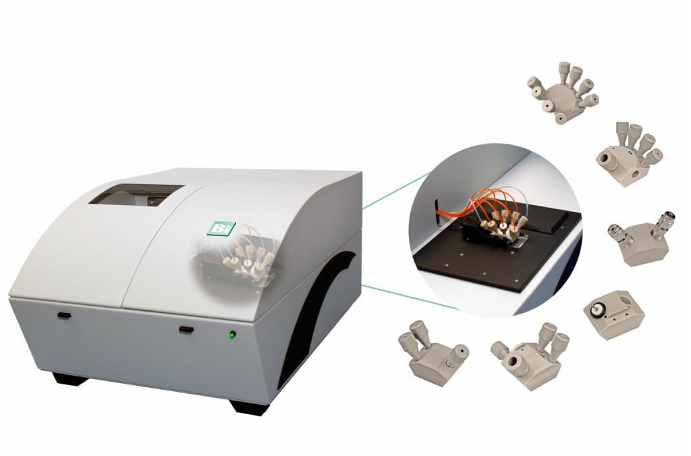

Aparatura naukowo-badawcza
Biosensing Instrument · analizatory SPR
Zajmujemy się dystrybucją zaawansowanej aparatury naukowej typu analizatory SPR (Surface Plasmon Resonance) firmy Biosensing Instrument. Oferowane przez nas produkty znajdują zastosowanie zarówno w przemyśle, jak i w badaniach naukowych.
- BI-4500 · BI-2500
- 5 i 3 kanały mikroprzepływowe
- Nagroda R&D 100 (2016)

Rezonans Plazmonów Powierzchniowych (SPR)
Rezonans plazmonów powierzchniowych (ang. Surface Plasmon Resonance – SPR) jest zjawiskiem fizycznym, które występuje, gdy spolaryzowana wiązka światła pada na powierzchnię metalu pod kątem większym od granicznego oraz spełniającym warunki wzbudzenia rezonansu.
Eksperymentalnie stwierdzono, że nawet bardzo niewielkie zmiany na powierzchni złota, takie jak np. adsorpcja pojedynczych cząsteczek, powodują zmianę warunków rezonansu. Właśnie ta właściwość sprawia, że technika znajduje zastosowanie w pomiarach oddziaływań na poziomie molekularnym.
Seria BI-4500
5-kanałowy analizator SPR w połączeniu z autosamplerem BI to idealne rozwiązanie do opracowywania testów o wysokiej przepustowości, łączące wydajność z niskimi kosztami eksploatacji i utrzymania. Zintegrowana z systemem BI-4500 technologia BI-DirectFlow™ zapewnia precyzyjne dozowanie próbki i bardzo dokładne pomiary kinetyki wiązania.
- Wysoka wydajność – 5 kanałów
- Wysoka czułość pomiarowa (<100 Da)
- Współpraca z autosamplerem
- Kompatybilny z modułami gazowymi i elektrochemicznymi

Seria BI-2500
Ten 3-kanałowy system SPR jest preferowanym wyborem w zaawansowanych badaniach biosensorów, m.in. przy wykrywaniu biomarkerów nowotworowych, opracowywaniu aptamerów, monitoringu środowiska i analizie zanieczyszczeń żywności. Otwarta konstrukcja oraz zintegrowane moduły do elektrochemii i analizy par chemicznych tworzą elastyczną platformę z możliwością rozbudowy o badania EC-SPR i Gas SPR.
Poproś o wycenęModuły analityczne
System SPR firmy Biosensing Instrument ma budowę modułową, zaprojektowaną z myślą o elastyczności i wszechstronności. Wymienne moduły analityczne pozwalają łatwo przechodzić między pomiarami w strumieniu cieczy, pomiarami elektrochemicznymi i detekcją w fazie gazowej.
- Moduł BI-DirectFlow™ – dostarczany standardowo z urządzeniami serii BI-4500 lub wyższej
- Moduł Flow Injection – dostarczany z urządzeniami serii BI-2500
- Moduł Gas SPR – moduł opcjonalny, kompatybilny ze wszystkimi analizatorami SPR produkowanymi przez Biosensing Instrument
- Moduł EC-SPR – opcjonalny dla serii BI-2500 i BI-4500
- Moduł EC-DualFlow™ – dostarczany opcjonalnie do wszystkich modeli analizatorów SPR
Akcesoria: Autosampler, Rozcieńczalnik Gazu GD-100 oraz chipy sensorowe.

Zastosowania
Life science
Badanie interakcji białko/DNA/lek, monitorowanie w czasie rzeczywistym ekspresji genów, opracowywanie nowych, skutecznych leków.
Pomiary elektrochemiczne
Analiza w czasie rzeczywistym takich procesów jak woltamperometria stripingowa, elektropolimeryzacja, redukcja czy utlenianie.
Analiza gazów i par chemicznych
Analiza procesów zachodzących na granicy ośrodków ciało stałe – gaz, wykrywanie toksycznych cząsteczek.
Ochrona środowiska, żywność
Wykrywanie śladów metali ciężkich w wodzie, analiza żywności pod kątem zawartości substancji szkodliwych, wykrywanie cząsteczek toksycznych w powietrzu.